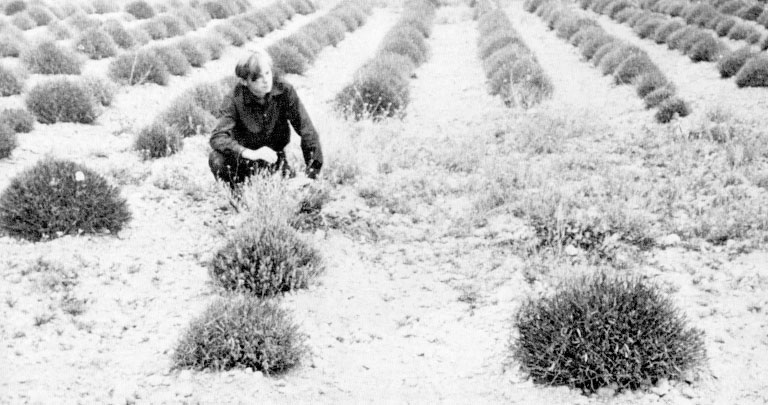

Sur le plateau de Valensole (Alpes-de-Haute-Provence), Maurice Masse (41 ans, cultivateur de lavande, vivant avec sa femme et ses 2 enfants) travaille
quotidiennement avec son père dans leur champ depuis une semaine et remarquent, chaque matin, des dégâts causés aux
lavandins, comme si quelqu'un avait pris, chaque nuit, des échantillons de ces plantes. Les plants ne sont pas
arrachés, mais des pousses sont coupées ou plutôt cassées et emportées.
, le témoin quitte son domicile. Il arrive dans son champ situé à 1600 m de sa maison.
, s'apprêtant à démarrer son tracteur qui stationne derrière un clapier (tas de
pierrailles de 2 m de haut), il entend un bruit comme un sifflement qui remplissait toute la campagne. De là où
il se trouve, il ne peut en localiser l'origine mais, pensant à un hélicoptère militaire, se dirige vers l'origine du
bruit. Sortant de derrière le clapier, il constate effectivement qu'un engin est posé dans son champ au milieu de ses
buissons de lavande, à 90 m. Cependant, sa forme rappelle plutôt celle d'un ballon de rugby.
Dessin de l'observation de Valensole
Le témoin s'approche en longeant une vigne située le long de son terrain, marchant parmi les rochers tout en
observant la "machine". L'objet, du volume d'une Renault Dauphine (de 3 à 3,50 m de large, pour environ 2,50 m
de hauteur) et de couleur neutre et mate. Il possède une coupole supérieure transparente, et 6 pieds montés sur un
pivot central s'enfonçant dans le sol, le faisant penser à une énorme araignée :
Je me trouvais du matin, comme j'en ai l'habitude, dans mon champ de lavande un peu
au nord de Valensole près de la route d'Oraison. Je n'avais pas encore mis en marche mon tracteur, arrêté derrière
un clapier (tas de pierrailles de 2 m de haut environ). J'allais le faire et j'allumais une cigarette quand
j'entendis un sifflement dont je ne localisais pas l'origine.
Le témoin contourne le clapier avec précaution, pensant prendre des gens la main dans le sac. Mais c'est un tout
autre spectacle qui l'attend :
Je sortis alors derrière le clapier qui me dissimulait et vis à 90 m de moi environ un engin de forme bizarre qui
s'était posé dans mon champ. J'avais d'abord pensé à un hélicoptère, mais je me suis rendu compte que ce ne pouvait
en être un. J'avais trop l'habitude de ces machines de l'armée qui, en difficulté ou non, atterrissent souvent sur
mon champ ou à côté. Je ne manque pas, chaque fois, d'aller m'entretenir avec les pilotes lesquels, bien souvent,
sont des chasseurs comme moi. Mais cet engin ressemblant à un gros ballon de rugby, gros comme une Dauphine,
surmonté d'une coupole, reposant sur 6 béquilles, qu'est-ce que ça pouvait être ? Peut-être, pensais-je, un engin
expérimental ?
l'objet n'est pas seul. 2 petits humanoïdes se trouvent à ses pieds, accroupis :
Je m'avance néanmoins d'un pas tranquille, rien dans les mains, à travers les jeunes plants de lavande qui couvrent
mon champ. Et j'aperçois tout près de l'engin 2 petits êtres ayant apparence humaine, penchés sur un pied de
lavande.
Un lui tourne le dos, l'autre lui fait face.
Sans trop d'inquiétude, je m'approche avec l'intention d'entrer en contact avec eux. J'arrive ainsi à 5 ou 6 m des
étranges visiteurs, mais ceux-ci m'aperçoivent, se redressent et l'un d'eux braque aussitôt sur moi une sorte de
tube, ou de "pistolet". Je suis alors instantanément figé sur place au point de ne pouvoir faire un seul mouvement.
Dessin d'un humanoïde tel qu'observé à Valensole
Lorsque je suis arrivé à 7 m d'eux, celui qui était tourné dans ma direction m'a alors aperçu. Il a dû faire un
signe à l'autre, tous 2 se sont redressés, celui qui avait le dos tourné a fait volte-face et a pointé un tube dans
ma direction qu'il prit dans un étui sur son côté droit ; à ce moment-là, j'ai été totalement immobilisé. Je ne
ressentais rien, je n'étais pas engourdi ni contracté, mais je ne pouvais pas faire un seul geste. J'ai très bien
distingué que celui qui m'avait paralysé remettait de la main droite, dans l'étui qu'il portait à gauche, ce fameux
tube.
Ces 2 êtres sont ensuite restés quelques mn à discuter en me regardant la plupart du temps. J'ai remarqué que leurs
yeux bougeaient et j'entendis une sorte de gargouillement provenant certainement de leur gorge. Ils n'avaient
presque pas de cou tant leur tête était rentrée dans les épaules. Ils semblaient se moquer de moi, pourtant leurs
regards n'étaient pas méchants, tout au contraire.
Au bout de 4 à 5 mn, ils retournèrent, avec une agilité surprenante, dans leur appareil en s'aidant de la main
droite, puis de la main gauche. Une fois montés à bord, une porte à glissière se referma d'une façon qui m'a semblé
automatique, de bas en haut, de la même manière qu'une porte de meuble.
Je les ai distingués derrière le dôme, j'ai entendu un bruit sourd qui a duré , tandis que leur
appareil se soulevait de 10 cm à 1 m. Le tube qui se trouvait sous l'appareil est sorti de terre et les 6 pieds se
sont mis à tourner. Il n'y a eu ni fumée, ni poussière soulevée par cet engin. Les 6 pattes tournaient dans le sens
des aiguilles d'une montre.
Tandis que les visiteurs me faisaient face, l'appareil est parti en arrière, dans la direction opposée à leur
orientation. Il s'est élevé en oblique plus vite qu'un avion à réaction. Je l'ai suivi pendant 15 à 30 m, puis il a
disparu subitement de ma vue, pire qu'un éclair.
Je suis resté immobilisé encore , puis j'ai remué mes mains, puis tout le corps et les membres.
Je suis alors parti vers mon tracteur.
J'ai allumé une cigarette et j'ai continué mon travail jusqu'. Monté sur mon engin, j'ai
biné ma vigne qui n'est pas celle que j'ai traversé lors de mon approche puis je suis rentré chez moi
.
C'est en mettant au courant de son aventure M. Moisson, patron du Café des Sports que la gendarmerie a vent
de la nouvelle.
Il racontera ensuite avoir vu également de petits êtres (1 m environ) dont la morphologie générale est proche de la
nôtre, mais qui sont manifestement étrangers à notre planète. En s'approchant d'eux, il note leur tête anormalement
grosse par rapport au corps (3 fois celle d'un humain), chauve, peau blanche, longues oreilles, pommettes saillantes
et charnues, avec une petite bouche circulaire. Ils portent des costumes gris-vert d'une seule pièce. Jusqu'alors
penchés sur un buisson de lavande, ils semblent enfin remarquer sa présence lorsqu'il est à 8 m d'eux, et l'un d'eux
braque alors vers le témoin un petit tube qui le paralyse, mais apparemment sans lui faire perdre conscience. Il se
souvient qu'il y a eu alors une sorte de communication télépathique avec ces êtres, dont il garde une impression de
bienveillance. Les 2 êtres retournent ensuite à leur engin, y pénètrent par une porte coulissante. Le bruit de
sifflement recommence et l'engin plane brièvement tandis que ses pieds commencent à tourner, puis il file vers l'ouest
à vive allure.
Le témoin ne recouvre sa capacité de mouvement que plus tard. À ce moment, il va immédiatement
examiner l'endroit où l'ovni s'est posé et remarque diverses marques au sol, ainsi qu'un trou central d'environ 30 cm
de profondeur là où il avait stationné le pylône central de l'engin. La terre tout autour est détrempée. Plus tard,
dans la journée, il note qu'elle s'est rapidement durcie jusqu'à avoir la consistance du ciment.
Enquête
Le témoin sur la trace dans son champ
Le lieutenant-colonel (capitaine ?) Valnet, commandant de la compagnie de gendarmerie des Alpes-de-Haute-Provence
contrôle le déroulement de l'enquête des gendarmes Azias et Santoni. Ceux-ci s'attèlent à leur tâche dès le
lendemain, recueillant un 1er témoignage du témoin, d'abord réticent par peur du ridicule.
Le témoin ne parle pas tout de suite des petits êtres.

La trace laissée sur le champ du témoin
, les journaux parlent de la "soucoupe volante de Valensole". La plupart émettent
l'hypothèse d'un hélicoptère Alouette 2 ou 3 : en effet, cet été-là, des exercices militaires sont en cours sous le
nom de "Provence 65" "Les gendarmes ont relevé d'étranges traces à l'endroit où un
cultivateur de Valensole affirme l'avoir vue", Le Dauphiné Libéré, 1965-07-04. Le général
Lionel Max Chassin ne confirme pas l'hypothèse de manœuvres militaires et demande que
les autorités fassent dans le plus bref délai, une déclaration à l'effet de dire si, oui ou non, un hélicoptère
en mission s'est posé un moment dans le champ de M. Masse.
Le témoin s'est réfugié sur la côte pour éviter la presse et les curieux. Le , les
journalistes le retrouvent et il répond aux questions d'Europe 1 : il reste sur ses déclarations jusqu'au ,
où il est interrogé pendant par le capitaine de gendarmerie Valnet. Au cours de cet entretien
éprouvant, il donne une nouvelle version des faits. Cette fois, les 2 êtres étaient hors de leur engin et semblaient
contempler, accroupis, un plan de lavandin. Ils ne mesuraient pas plus de 1 m, leur crâne disproportionné, chauves,
un trou à la place de la bouche. Il n'avait pas osé tout dire de peur d'être enfermé à l'asile ; il ne l'avait
raconté qu'à son père et au gendarme, le maréchal des logis Oliva.
Guieu
Jimmy Guieu (alors chef du service d'enquête du groupement Ouranos) se rend sur les lieux. En voulant recueillir un peu de terre à
l'endroit où l'engin s'est posé, il brise la lame de son canif tant le sol est dur.
Chautard
Début , maître G. Chautard (membre du GEPA et magistrat
conseiller à la cour d'appel de Lyon), mène son enquête à titre privé.
Chautard interroge le témoin et rédige un long rapport où il conclut à l'honnêteté du témoignage Chautard, G. : "Enquête à Valensole - Suprenantes révélations", Phénomènes Spatiaux, vol.
2, n° 5, pp. 42-46, 1965-09Bourret, J.-C.: "L'affaire de Valensole : un agriculteur
paralysé par un mystérieux rayon", La nouvelle vague des soucoupes volantes, pp. 125-126, 1976.
Le témoin sera par la suite interrogé par Aimé Michel qui constatera qu'il est victime
pendant quelques semaines d'hypersomnie.
Pour les ufologues et pour certains journalistes, le témoin n'a pas tout dit. , le journaliste
René Pacaut, rencontre le témoin qui lui dit : Je ne peux pas dire tout ce que j'ai vu. Personne ne me
croirait.
Fin , le témoin accorde un entretien à Jacques Vallée. Il en ressort
que les êtres venaient de quelque part ailleurs, mais qu'ils étaient humains.
Plus tard, le témoin semblera avoir conservé un sentiment quasi-religieux de ce mystérieux "contact" des êtres
venus d'ailleurs. Il meurt Tarade,
Guy: Magonie, 2004-07-21.
Bourret, Jean-Claude : La nouvelle vague des soucoupes
volantes, Presses Pocket 1976
Maugé & Rocard
Combinaison gris-vert, tête disproportionnée et chauve... c'est aussi un pilote d'hélicoptère US à
cette époque Shirakura, Takeo: "U.S.Army
Helicopter Pilot around 1970", PX n° 15, 1988
, Claude Maugé sollicite et obtient un rendez-vous privé avec
Yves Rocard, qui était alors directeur de l'Observatoire de Haute Provence. Ancienne
base américaine durant la 2de guerre mondiale "récupérée" depuis par la France, c'était aussi un Centre de Suivi
de satellites situé à moins de 5 km du terrain de Masse. Au cours de l'entretien, Rocard fait part à Maugé de sa
conviction que la RR3 de Masse résultait
d'une confusion de sa part, volontaire ou non, avec l’atterrissage d'un hélicoptère dans son champ de lavande. Une
hypothèse qui aurait été originellement avancée par "des journalistes" (lesquels ?) en vertu de manœuvres
militaires dans la région. Assez vite abandonnée au vu des deux rapports de gendarmerie et du déni de l'Armée de
l'air française. Dans la bouche de Rocard, version Maugé, hypothèse journalistique rendait techniquement et
politiquement plausible qu'il pouvait s'agir d'un hélicoptère espion américain (illégitimement) décollé
d'un navire de la 6ᵉ Flotte ancrée en rade de Villefranche avec mission d'aller
mesurer l'effet des ondes émises ou captées par le Centre de Détection Radar de Valensole, chargé de renseigner l’État Français des départs de fusées de
cap Canaveral et dont la puissance venait tout juste de passer de 15 à 80 KV, et de leur effet possible sur les
transmissions radio et des avions de surveillance américains (U2) qui
survolaient l'espace français 24 h/24. L'hypothèse tombait à pic puisqu'à l'époque de la RR3 de Masse (1er juillet 1965), de Gaulle
était en train de chercher à se débarrasser des forces américaines de l'OTAN,
considérées comme troupes d'occupation étrangères. À quoi s'ajoutait le fait que le gouvernement français
avait épinglé le 17 juillet de la même année et "quasi dans la même région" un "avion espion" américain en train
de survoler le centre atomique de Pierrelatte. Apparemment, à cette époque, aucune carte de navigation aérienne
n'indiquait une quelconque interdiction du survol de ce site, seule l'usine de Marcoule bénéficiait d'une zone
d'interdiction de survol à basse altitude."Mais
que s'est-il passé le 17 juillet 1965 dans le ciel de la Vallée du Rhône ?"Boitte, Frank : "L'affaire
Valensole : une histoire qui n'en finit pas de rebondir", CERPI, 2013-08-08. De fait, la 6ᵉ
Flotte disposait d'une TF 62 dotée d'hélicoptères pour mener des opérations sur la
côte ou évacuer des civils de zones dangereuses .